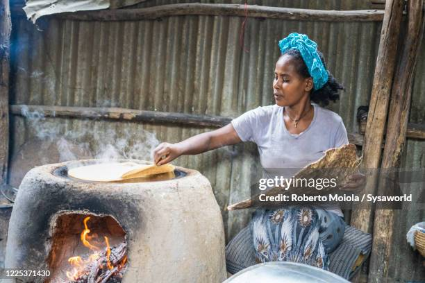
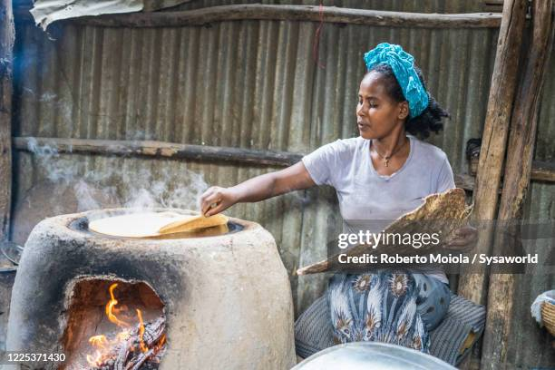

- Meal type: bread like, extention.
- Tastes like: a bit sour, but you'll like it.
- Color: Could be dark red or grey white.
- thikness: Well liked when its moderately thin.
 

Ingredients:
Traditionally, injera is made with just two ingredients: teff flour and water. Teff flour is ground from the grains of Eragrostis tef, also known as teff, a cereal crop from the Ethiopian Highlands. Teff production is limited to certain middle elevations with adequate rainfall and is a low-yield crop, so it is relatively expensive for the average farming household. Many farmers in the Ethiopian highlands grow their own subsistence grains, so wheat, barley, corn, or rice flour are sometimes used to replace the teff content. Teff seeds are graded according to color, used to make different kinds of injera: nech (white), key or quey (red), and sergegna (mixed). When teff is not available, injera is made by fermenting a variety of different grains, including barley, millet, and sorghum. Teff, however, is the preferred grain for making injera, primarily because of its sensory attributes (color, smell, taste). Teff flour is gluten-free.